1
What monument is depicted in this
image?
Terms of Use: This file is licensed under the Creative Commons Attribution-Share Alike 3.0 Unported license. This image is attributed to Wikipedia user .
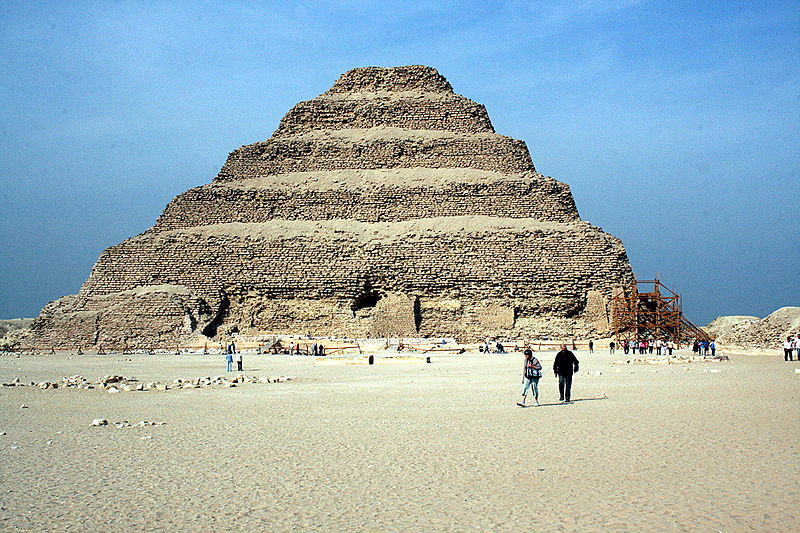
Terms of Use: This file is licensed under the Creative Commons Attribution-Share Alike 3.0 Unported license. This image is attributed to Wikipedia user .
Choose one answer.
| A. The Step Pyramid of Djoser | ||
| B. The Great Pyramid | ||
| C. The Meidum Pyramid | ||
| D. The Mortuary Temple of Mentuhotep II | ||
| E. The Mortuary Temple of Hatshepsut |
Question 2
Egyptian gods are usually not
depicted as which of the
following?
Choose one answer.
| A. As human beings | ||
| B. With the head of an animal and the body of a human | ||
| C. As animals | ||
| D. As natural phenonmenon, such as the sun or moon | ||
| E. All of the above |
Question 3
Which of the following is a
traditional symbol of ancient
Egyptian royalty?
Choose one answer.
| A. The royal kilt with ornamental bull's tail | ||
| B. A rectangular false beard | ||
| C. The crook and flail | ||
| D. The double crown with the sacred uraeus | ||
| E. All of the above |
Question 4
What are the basic structural
elements of Egyptian art?
Choose one answer.
| A. The cube and the horizontal and vertical axes | ||
| B. The circle and the oval | ||
| C. Square forms with emphasis placed on the vertical axis | ||
| D. The pyramid | ||
| E. None of the above |
Question 5
Which of the following statements
about Egyptian hieroglyphs is
false?
Choose one answer.
| A. Some hieroglyphs represent actual objects. | ||
| B. No hieroglpyhs represent individual sounds. | ||
| C. As much care was taken in drawing hierogplyphs as in creating images in art. | ||
| D. Writing and art are inseperable in Ancient Egypt. | ||
| E. Hieroglyphs can be written from left to right or from right to left. |
Question 6
Which king is depicted on this
image?

Choose one answer.
| A. Mentuhotep II | ||
| B. Narmer | ||
| C. Khufu | ||
| D. Ramses II | ||
| E. Khafre |
Question 7
Which of the following statements
about the Narmer Palette is false?
Choose one answer.
| A. At its top, the name of the king is inscribed between two bovine heads. | ||
| B. It depicts the king's victory over his enemies. | ||
| C. It shows the king's enemies in a marshland. | ||
| D. It was found at Thebes. | ||
| E. It is made of grey schist. |
Question 8
Which
pharaoh built this monument, known
as the Great Sphinx of
Giza?

Choose one answer.
| A. Khafre | ||
| B. Khufu | ||
| C. Mentuhotep II | ||
| D. Ramses II | ||
| E. Seti I |
Question 9
Which of the following is true
about the Great Pyramid?
Choose one answer.
| a. It was orginally covered with graite stones. | ||
| b. It was built by Khafre. | ||
| c. It can not be entered. | ||
| d. It was part of a large set of monuments and rituals to help the pharaoh ascend to the gods in the heavens. | ||
| e. The Great Sphinx was built by the same ruler who commissioned it. |
Question 10
In the development of Egyptian
pyramids, which of the following
came first?
Choose one answer.
| A. The Great Pyramid | ||
| B. The Meidum Pyramid | ||
| C. Mastabs | ||
| D. The Step Pyramid of Djoser | ||
| E. The Bent Pyramid of Dashur |
Question 11
Many high-ranking Old Kingdom
officials were buried at which of
the following sites?
Choose one answer.
| A. Saqqara | ||
| B. Beni-Hassan | ||
| C. Deir el-Bahri | ||
| D. Abu Simbel | ||
| E. Dashur |
Question 12
Which Eleventh Dynasty ruler built
a terraced tomb at Deir el-Bahri?
Choose one answer.
| A. Mentuhotep II | ||
| B. Amenemhat I | ||
| C. Seti I | ||
| D. Pepi II | ||
| E. Ramses II |
Question 13
During the Twelfth Dynasty the
capital of Egypt was moved to what
site?
Choose one answer.
| A. Thebes | ||
| B. Hierakonopolis | ||
| C. Alexandria | ||
| D. Abu Simbel | ||
| E. El-Lisht |
Question 14
Which of the following is the name
of the Middle Kingdom site where
provincial governors were buried?
Choose one answer.
| A. Beni Hasan | ||
| B. El-Lisht | ||
| C. Deir el-Medina | ||
| D. Amarna | ||
| E. Giza |
Question 15
Which of the following statements
about New Kingdom temples is true?
Choose one answer.
| A. Only cult temples were built during the New Kingdom. | ||
| B. Few texts survive that describe the construction, circumstance, and function of New Kingdom temples. | ||
| C. The standard temple followed a tripartite plan, cons isting of an outer court, a hypostyle (or columned) hall, and the sanctuary itself. | ||
| D. Temples are never depicted in New Kingdom art. | ||
| E. The reliefs that decorate New Kingdom temples were not painted. |
Question 16
This image depicts the remains of
the Grand Colonnade of Amenhotep
III at which Egyptian Temple?
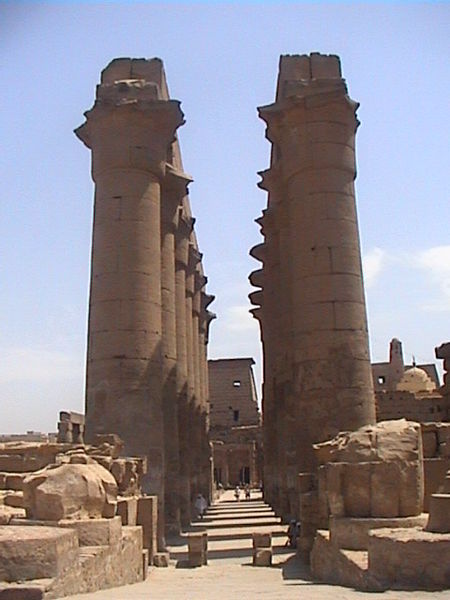
Choose one answer.
| A. Luxor | ||
| B. Abu Simbel | ||
| C. Karnak | ||
| D. The Temple Complex at Philae | ||
| E. The Temple of Horus at Edfu |
Question 17
These colossal images depict which
ruler who built the Peristyle Hall
at Luxor Temple?

Choose one answer.
| A. Ramses II | ||
| B. Seti I | ||
| C. Amenhotep III | ||
| D. Amenhotep IV | ||
| E. Mentuhotep II |
Question 18
This image shows the remains of the
columns of the Hypostyle Hall of
the Precinct of Amun-Re in which
temple?
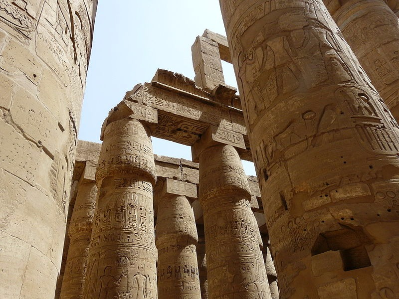
Choose one answer.
| A. Karnak | ||
| B. Luxor | ||
| C. The Mortuarty Temple ot Seti I | ||
| D. The Mortuary Temple of Hatshepsut | ||
| E. Abu Simbel |
Question 19
This image depicts which pharaoh's
mortuary temple?

Choose one answer.
| A. Hatshepsut | ||
| B. Seti I | ||
| C. Akhenaten | ||
| D. Ramses II | ||
| E. Khufu |
Question 20
Which of the following statements
about Hatshepsut's Mortuary Temple
is false?
Choose one answer.
| A. It is a multi-terraced temple. | ||
| B. It was designed by the architect Senemut. | ||
| C. Its terraced form was unprecedented. | ||
| D. It was built into the cliffs at Deir el-Bahri. | ||
| E. It contains a chapel devoted to the goddess Hathor. |
Question 21
Which of the following is depicted
in Hatshepsut's mortuary temple?
Choose one answer.
| A. The divine birth of Hatshepsut | ||
| B. Hatshepsut's co-regent, Thutmose III | ||
| C. An expedition to Punt | ||
| D. Festival scenes | ||
| E. All of the above |
Question 22
This image of Seti I is from his
mortuary temple located at what
site?
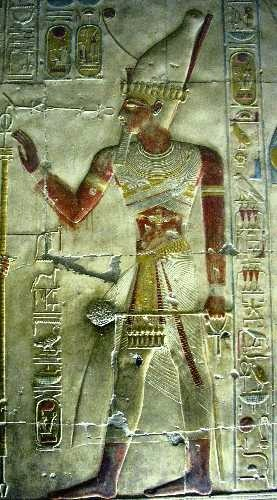
Choose one answer.
| A. Abydos | ||
| B. Deir el-Bahri | ||
| C. Giza | ||
| D. Beni Hasen | ||
| E. Deir el-Medina |
Question 23
Where were New Kingdom pharaohs
buried?
Choose one answer.
| A. The Valley of the Kings | ||
| B. In tombs near their mortuary temples | ||
| C. Beni Hasen | ||
| D. In pyramids at Giza and other sites | ||
| E. Saqarra |
Question 24
This depiction of Tutankhamen is
heavily influenced by depictions of
the pharaoh during which time
period?
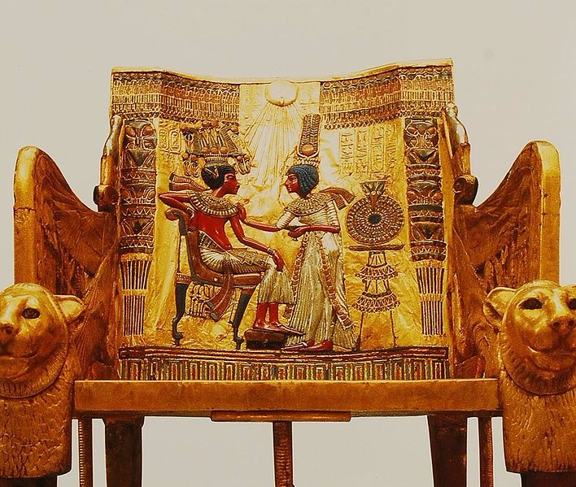
Choose one answer.
| A. Amarna | ||
| B. Old Kingdom | ||
| C. Middle Kingdom | ||
| D. First Intermediate Period | ||
| E. None of the above |
Question 25
What is the name of the village
where the workers on the tombs in
the Valley of the Kings lived and
were buried?
Choose one answer.
| A. Deir el-Medina | ||
| B. Beni Hasen | ||
| C. Abydos | ||
| D. Deir el-Bahri | ||
| E. El-Lisht |
Question 26
This image depicts which Egyptian
pharaoh?
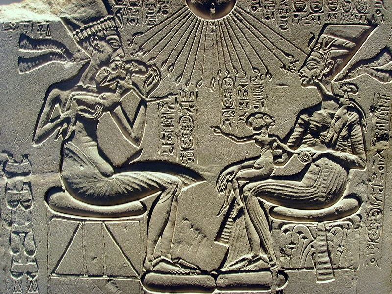
Choose one answer.
| A. Ramses II | ||
| B. Akhenaten | ||
| C. Senusret III | ||
| D. Seti I | ||
| E. Hatshepsut |
Question 27
Which of the following statements
about Amarna Period art is false?
Choose one answer.
| A. It was focused on the sun disc Aten. | ||
| B. At this time, the pharaoh was frequently depicted with his wife and children. | ||
| C. Humans are usually depicted with swelled bellies and hips, as well as thin shoulders and arms. | ||
| D. The pharaoh is frequently depicted with the godess Maat. | ||
| E. Official inscriptions reflected everyday spoken language. |
Question 28
Which of the following statements
about Third Intermediate Period
Egyptian art and architecture is
false?
Choose one answer.
| A. The Third Intermediate Period was a time when many great temples were constructed. | ||
| B. Temple networks were the center of artistic production. | ||
| C. Temple precincts were favored burial sites. | ||
| D. The king was often emphasized in art as the child/son of a divine pair. |
Question 29
These colossal images of Ramses II
are part of which Egyptian
temple?
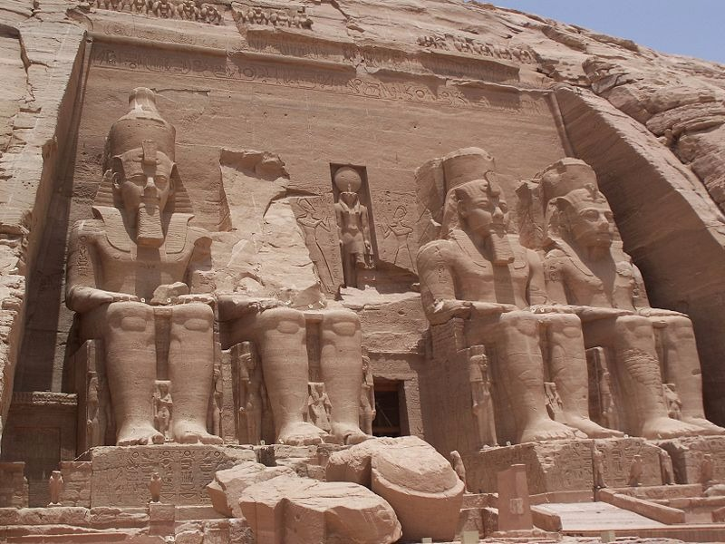
Choose one answer.
| A. Karnak | ||
| B. Luxor | ||
| C. Osireion | ||
| D. Abu Simbel | ||
| E. The Mortuary Temple of Seti I |
Question 30
This sphinx of King Taharqa is from
which Egyptian dynasty?
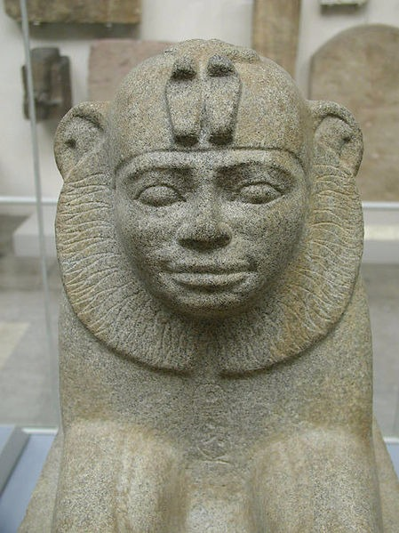
Choose one answer.
| A. Thirtieth Dynasty | ||
| B. Eleventh Dynasty | ||
| C. Eighteenth Dynasty | ||
| D. Nineteenth Dynasty | ||
| E. Twenty-fifth dynasty |
Question 31
Which ruler of the Kushite or
Nubian dynasty introduced Egyptian
elements into the burial practices
of Kushite/Nubian royalty?
Choose one answer.
| A. Piye | ||
| B. Tantamani | ||
| C. Shabako | ||
| D. Taharqa | ||
| E. None of the above |
Question 32
Which of the following statements
about Ptolemaic art and culture is
false?
Choose one answer.
| A. During this period, Egyptian art was infused with Hellenisitc elements. | ||
| B. Many temples were built during this period. | ||
| C. The Ptolemys did not promote Egyptian art and culture. | ||
| D. The Ptolemy were worshipped as gods while they were living. | ||
| E. All of the above |
Question 33
This ring depicts an Egyptian
pharaoh from which period?

Choose one answer.
| A. The New Kingdom | ||
| B. The Ptolemaic Period | ||
| C. Third Intermediate Period | ||
| D. Second Intermediate Period | ||
| E. Late Period |
Question 34
What type of portrait was painted
on a wooden board and attached to a
mummy?
Choose one answer.
| A. Shabti portrait | ||
| B. Oinochoai portrait | ||
| C. Fayum portrait | ||
| D. Mummy masks | ||
| E. None of the above |
Question 35
This type of portrait was made
during what period in ancient
Egypt?
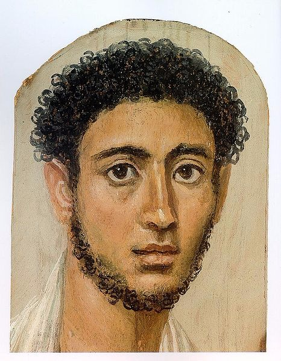
Choose one answer.
| A. New Kingdom | ||
| B. Third Intermediate Period | ||
| C. Late Period | ||
| D. Ptolemaic Period | ||
| E. Roman Period |
Question 36
This image of the Temple of Hathor
is from which Egyptian site?

Choose one answer.
| A. Dendera | ||
| B. Abydos | ||
| C. Deir el-Bahri | ||
| D. Abu Simbel | ||
| E. Thebes |
Question 37
This image depicts the entrance to
what Ptolemaic Egyptian
temple?
br/>
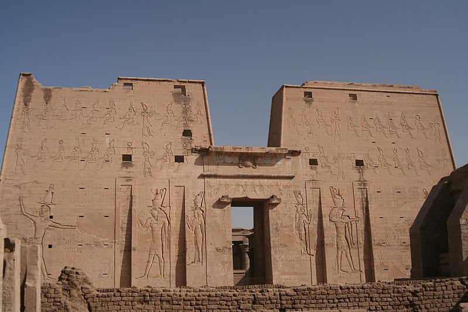
br/>
Choose one answer.
| A. Abu Simbel | ||
| B. The Temple of Philae | ||
| C. Luxor Temple | ||
| D. The Temple of Horus at Edfu | ||
| E. None of the above |
Question 38
Which of the following gods was the
focus of the Temple Complex at
Philae?
Choose one answer.
| A. Amun | ||
| B. Maat | ||
| C. Isis | ||
| D. Horus | ||
| E. Osiris |
Question 39
Megaliths with reliefs have been
found at what Ancient Near Eastern
Neolithic site?
Choose one answer.
| A. Göbekli Tepe | ||
| B. Jericho | ||
| C. 'Ain Ghazal | ||
| D. Uruk | ||
| E. Nevali Çori |
Question 40
This image is of a figurine from
which Near Eastern prehistoric
site?

Choose one answer.
| A. Göbekli Tepe | ||
| B. 'Ain Ghazal | ||
| C. Jericho | ||
| D. Uruk | ||
| E. Nevali Çori |
Question 41
Which of the following is the site
of a large Neolithic village in
Turkey that flourished from about
9400-7700 years ago?
Choose one answer.
| A. Jericho | ||
| B. Nevali Çori | ||
| C. 'Ain Ghazal | ||
| D. Çatalhöyük | ||
| E. Uruk |
Question 42
Choose one answer.
| A. Ain Ghazal | ||
| B. Jericho | ||
| C. Uruk | ||
| D. Çatalhöyük | ||
| E. Nevali Çori |
Question 43
This image is an example of what
kind of Ancient Near Eastern
object?
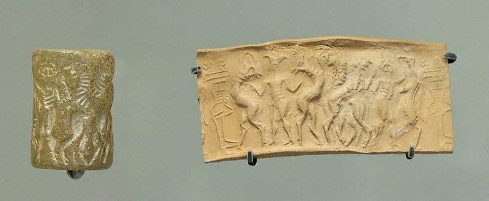
Choose one answer.
| A. A cylinder seal | ||
| B. A portion of a cone mosaic | ||
| C. A stamp seal amulet | ||
| D. A papyrus | ||
| E. None of the above |
Question 44
Which of the following, although
never a capital, was an important
sacred center that often played an
important role in Mesopotamian
politics?
Choose one answer.
| A. Pasargadae | ||
| B. Babylon | ||
| C. Nippur | ||
| D. Nimrud | ||
| E. Ninevah |
Question 45
Nippur was the sacred city of what
Mesopotamian god?
Choose one answer.
| A. Ashur | ||
| B. Enlil | ||
| C. Dumuzi | ||
| D. Gula | ||
| E. Ianna |
Question 46
This object was found at what
Ancient Near Eastern site?
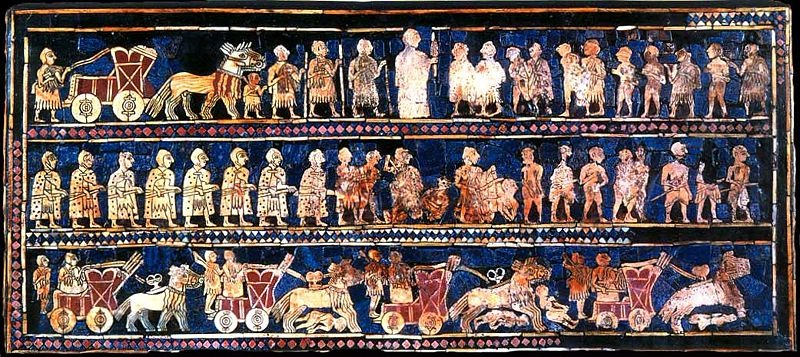
Choose one answer.
| A. Nippur | ||
| B. Ziggurat of Ur | ||
| C. The Royal Graves of Ur | ||
| D. Uruk | ||
| E. Tell Asmar |
Question 47
Which of the following statements
about Early Dynastic Mesopotamian
sculpture is false?
Choose one answer.
| A. The majority of these statues were votive figures. | ||
| B. They only depict female worhsippers. | ||
| C. They are made of gypsum or limestone. | ||
| D. Many have inlaid eyes and painted hair. | ||
| E. Facial characteristics show little variation between statues. |
Question 48
This statue, discovered at the
Temple of Ishtar at Mari, is from
what period?
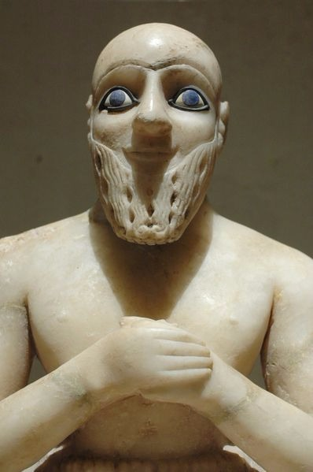
Choose one answer.
| A. Old Babylonian Period | ||
| B. Early Dynastic Period | ||
| C. Neo-Sumerian Period | ||
| D. Neo-Assyrian Period | ||
| E. Neolithic Period |
Question 49
Which of the following statements
about ziggurats is true?
Choose one answer.
| A. They can be entered through a door at their base. | ||
| B. They are mud-brick stepped towers with temples at their top. | ||
| C. They were only built during the Early Dynastic Period. | ||
| D. They were royal tombs. | ||
| E. None of the above |
Question 50
This image is an example of what
type of Ancient Near Eastern
structure?

Choose one answer.
| A. A step pyramid | ||
| B. A "true" pyramid | ||
| C. A ziggurat | ||
| D. A royal palace | ||
| E. A royal tomb with a mortuary temple at its top |
Question 51
This royal portrait head is from
what period?
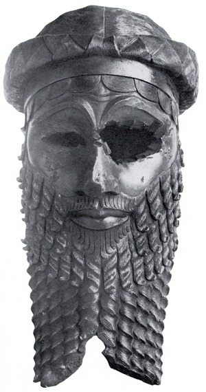
Choose one answer.
| A. Early Dynastic Period | ||
| B. Akkadian Period | ||
| C. Neo-Sumerian Period | ||
| D. Old Babylonian Period | ||
| E. Neo-Assyrian Period |
Question 52
This image is a detail of what
larger Ancient Near Eastern
work?

Choose one answer.
| A. Stele with the Law Code of Hammurabi | ||
| B. The Royal Standard of Ur | ||
| C. Victory Stele of Naram-Sin | ||
| D. A modern impression of a cylinder seal | ||
| E. None of the above |
Question 53
In which of the following ways is
Naram-Sin's status and power shown
in the Victory Stele of Naram-Sin?
Choose one answer.
| A. His horned helmet | ||
| B. The many weapons he carries | ||
| C. His size | ||
| D. His physcial closeness to the gods | ||
| E. All of the above |
Question 54
This is a statue of what Ancient
Near Eastern ruler?
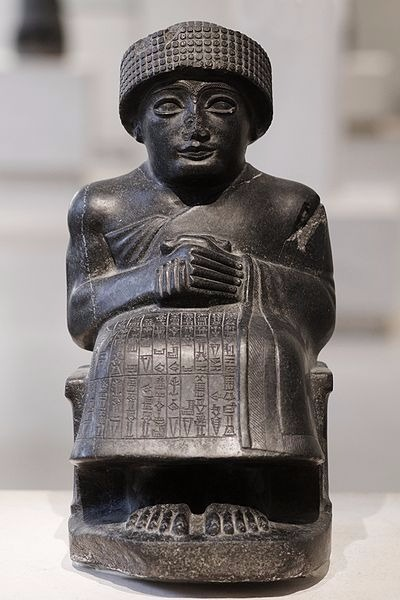
Choose one answer.
| A. Gudea | ||
| B. Sargon II | ||
| C. Hammurabi | ||
| D. Ashurnasirpal II | ||
| E. Ur-Nammu |
Question 55
This image depicts a detail of what
Ancient Near Eastern object?

Choose one answer.
| A. The Victory Stele of Naram-Sin | ||
| B. A relief from the Northwest Palace of Ashurnasirpal II | ||
| C. The Standard of Ur | ||
| D. Stele with the Law Code of Hammurabi | ||
| E. None of the above |
Question 56
The following is an example of
zoomorphic art created by what
group of people?
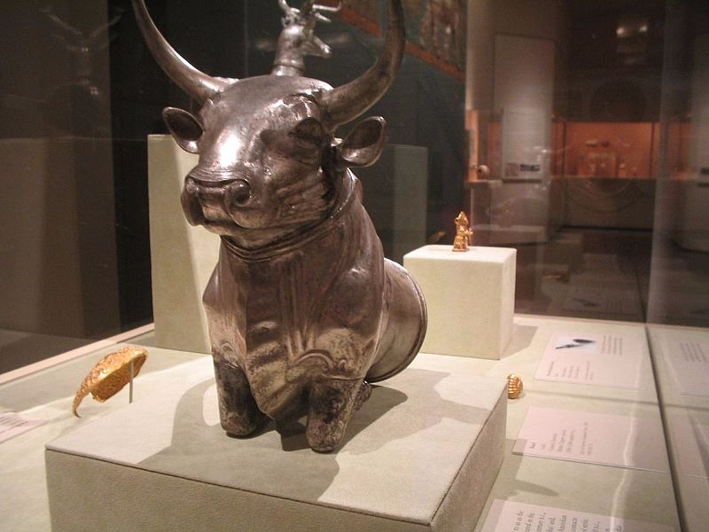
Choose one answer.
| A. Babylonians | ||
| B. Sumerians | ||
| C. Assyrians | ||
| D. Persians | ||
| E. Hittites |
Question 57
Which of the following was the site
of an ancient Hittite capital?
Choose one answer.
| A. Lagesh | ||
| B. Yazilikaya | ||
| C. Hattusha | ||
| D. Uruk | ||
| E. Nippur |
Question 58
These carvings were found at what
Hittite site?
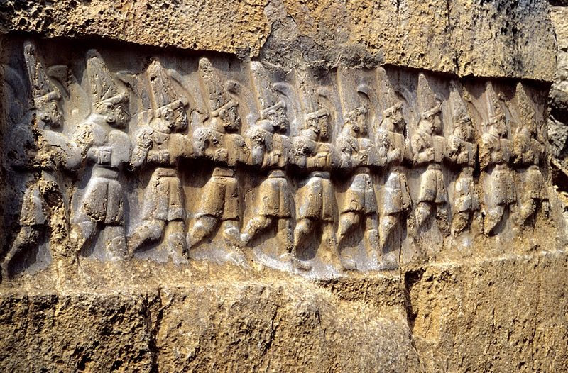
Choose one answer.
| A. Hattusha | ||
| B. Çatalhöyük | ||
| C. Uruk | ||
| D. Yazilikaya | ||
| E. Tell Asmar |
Question 59
King Ashurnasirpal II's Northwest
Palace was built on what modern
site?
Choose one answer.
| A. Nimrud | ||
| B. Tell Asmar | ||
| C. Ninevah | ||
| D. Susa | ||
| E. Pasargadae |
Question 60
This is a representation of what
type of Ancient Near Eastern
mythological creature?
Terms of Use: This file is licensed under the Creative CommonsAttribution-Share Alike 3.0 Unported license. This image is attributed to Wikimedia user .
Terms of Use: This file is licensed under the Creative CommonsAttribution-Share Alike 3.0 Unported license. This image is attributed to Wikimedia user .

Choose one answer.
| A. Labbu | ||
| B. Sirrush | ||
| C. Gidim | ||
| D. Lamassu | ||
| E. Allu |
Question 61
Which of the following statements
about the Northwest Palace of
Ashurnasirpal II is false?
Choose one answer.
| A. The palace was organized around three large courtyards. | ||
| B. The king does not appear in any of the reliefs that decorate the palace. | ||
| C. It was built in the ancient city of Kahlu. | ||
| D. State apartments and the major throne room were situated around the first courtyard. | ||
| E. The living quarters were located in the innermost courtyard. |
Question 62
This relief, excavated from
Khorsabad, depicts which
Neo-Assyrian ruler with a
dignitary?

Choose one answer.
| A. Ashurnasirpal II | ||
| B. Sargon II | ||
| C. Tiglath-Pileser III | ||
| D. Sennacherib | ||
| E. Esarhaddon |
Question 63
Which Neo-Assyrian ruler moved the
capital to Nineveh?
Choose one answer.
| A. Sargon II | ||
| B. Sennacherib | ||
| C. Ashurbanipal | ||
| D. Ashurnasirpal II | ||
| E. Tiglath-Pileser III |
Question 64
This image is a reconstruction of
what Ancient Near Eastern
architectural feature?
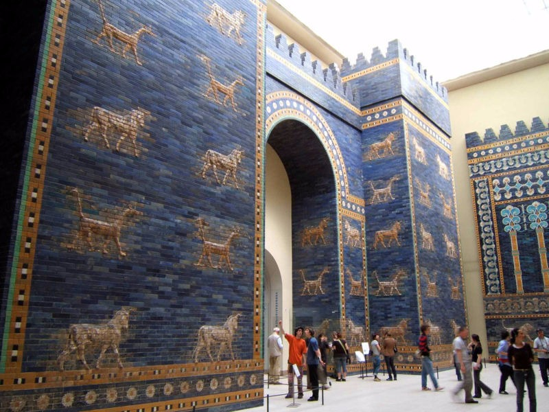
Choose one answer.
| A. The entrance to Sargon II's throne room | ||
| B. Ziggurat of Ur | ||
| C. The Ishtar Gate | ||
| D. The hypostyle hall of Ashurnasirpal II's palace | ||
| E. Nineveh's Processional Way |
Question 65
What do the animals that decorate
the Ishtar Gate and Nebuchadnezzar
II's Processional Way symbolize?
Choose one answer.
| A. The patron gods of Babylon | ||
| B. The power of the king | ||
| C. The king's subjects | ||
| D. Nature spirits | ||
| E. People who the king has conquered in battle |
Question 66
This image depicts what Ancient
Near Eastern structure?
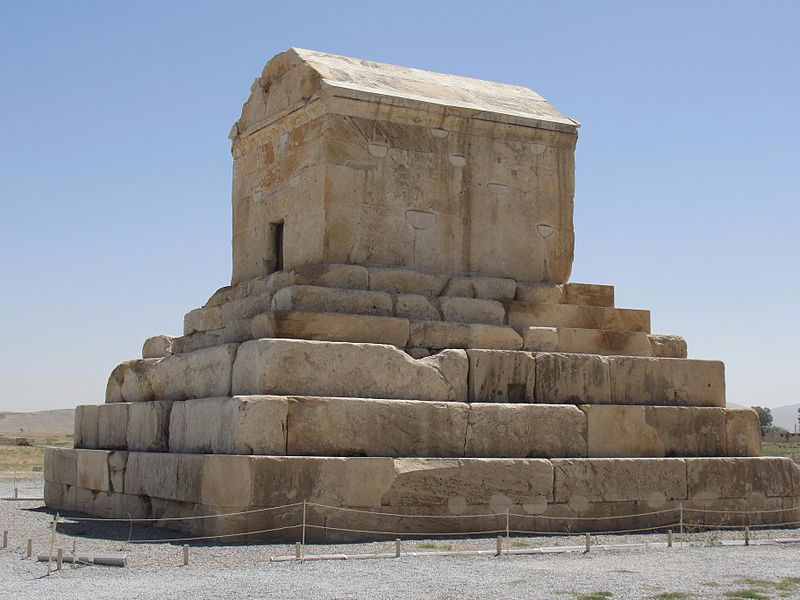
Choose one answer.
| A. The Tomb of Cyrus the Great | ||
| B. Ziggurat of Ur | ||
| C. The Yazilikaya rock-cut sanctuary | ||
| D. The Prison of Solomon | ||
| E. Tall-i Takht |
Question 67
Which of the following cities was
the capital of Cyrus the Great?
Choose one answer.
| A. Susa | ||
| B. Persepolis | ||
| C. Cyropolis | ||
| D. Pasargadae | ||
| E. Estakhar |
Question 68
Darius I and Xerxes built large
palaces and other buildings at
which major Persian dynastic
center?
Choose one answer.
| A. Pasagardae | ||
| B. Estakhr | ||
| C. Cyropolis | ||
| D. Persepolis | ||
| E. All of the above |
Question 69
This image depicts the remains of
what ancient Near Eastern
capital?

Choose one answer.
| A. Ur | ||
| B. Ninevah | ||
| C. Hattusha | ||
| D. Babylon | ||
| E. Persepolis |
Question 70
Which of the following structures
was NOT built at Persepolis?
Choose one answer.
| A. The Apadana | ||
| B. The Palace of Darius | ||
| C. The Tomb of Cyrus the Great | ||
| D. The Palace of Xerxes | ||
| E. The Throne Hall or Hundred Column Hall |
Question 71
Which of the following is true
about mortuary art and architecture
of the First Intermediate Period?
Choose one answer.
| a. This is the time when the Great Pyramid at Giza was constructed. | ||
| b. High-ranking officials during this period were buried in mastabas. | ||
| c. During this time kings were buried in the Valley of the Kings. | ||
| d. During this period many local artistic and architectural styles developed. | ||
| e. Art and architecture from this period does not show many regional variations. |
Question 72
The Narmer Palette is traditionally
connected to which historical
event?
Choose one answer.
| A. The defeat of the Hyksos | ||
| B. The unification of Upper and Lower Egypt | ||
| C. Ramses II's conquest of Nubia | ||
| D. Ramses II's first Syrian campaign | ||
| E. None of the above |
Question 73
Which of the following is NOT a
development in Egyptian mortuary
art and architecture during the
Second Intermediate Period?
Choose one answer.
| A. Hysksos-style burials for high-ranking officials | ||
| B. Rishi or human-shaped coffins decorated with vulture's wings | ||
| C. The construction of royal rock-cut tombs near Thebes | ||
| D. The end of the tradition of royal burial in pyramids | ||
| E. The development of regional art styles |
Question 74
This type of coffin that is
human-shaped with vulture wings
that wrap the body first appeared
during which period?
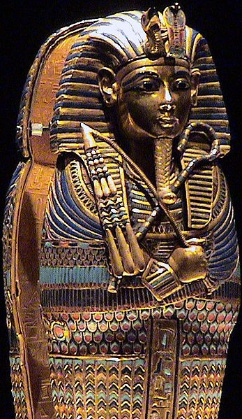
Choose one answer.
| A. Second Intermediate Period | ||
| B. New Kingdom | ||
| C. Early Dynastic | ||
| D. Middle Kingdom | ||
| E. Third Intermediate Period |
Question 75
This image shows examples of what
kind of figures that were
substitutes for the deceased?

Choose one answer.
| A. Rishi | ||
| B. Canopic jars | ||
| C. Shabti | ||
| D. Mastaba | ||
| E. None of the above |
Question 76
This is a diagram of what kind of
structure in which many Old Kingdom
high-ranking officials were
buried?

Choose one answer.
| A. Pit grave | ||
| B. Rock-cut tomb | ||
| C. Mastaba | ||
| D. Bent pyramid | ||
| E. Ziggurat |
Question 77
Which of the following statements
about the tombs of high-ranking Old
Kingdom officials is false?
Choose one answer.
| A. They contain reliefs, paintings, and statuary that were often created by the same craftsman who worked on the tombs of the pharaohs. | ||
| B. Their hieroglyphic inscriptions record the tomb owner's titles and rank. | ||
| C. Their reliefs depict the daily activity of producing food and other provisions needed by the deceased's spirit. | ||
| D. They were not constructed near royal tombs. | ||
| E. They have a rectangular superstructure. |
Question 78
Which of the following statements
about the Tomb of Meketre is true?
Choose one answer.
| A. It was constructed during the Old Kingdom. | ||
| B. It is famous for its many models of boats and scenes of daily life. | ||
| C. It was built in Saqarra. | ||
| D. It has a rectangular superstructure. | ||
| E. None of the above |
Question 79
This image depicts which Egyptian
god mummifying the body of the
deceased?
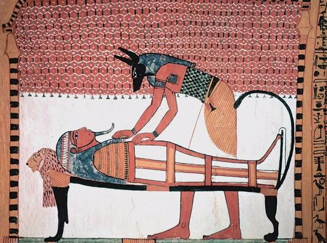
Choose one answer.
| A. Anubis | ||
| B. Thoth | ||
| C. Amun | ||
| D. Mut | ||
| E. Osiris |
Question 80
The pharaoh in this relief holds
what Egyptian hieroglyph that is
the symbol for life?

Choose one answer.
| A. Djet | ||
| B. Kheper | ||
| C. Shen | ||
| D. Ankh | ||
| E. Djed |
Question 81
This statue of Hatshepsut from her
mortuary temple depicts the pharaoh
as what Egyptian god?

Choose one answer.
| A. Amun | ||
| B. Mut | ||
| C. Osiris | ||
| D. Anubis | ||
| E. Horus |
Question 82
Where were obelisks in New Kingdom
temples typically erected?
Choose one answer.
| A. Flanking the entrance to the temple | ||
| B. Lining the processional way | ||
| C. In the Inner Sanctuary | ||
| D. Inside the Outer Court | ||
| E. All of the above |
Question 83
Which of the following statements
about the statues found at 'Ain
Ghazal is true?
Choose one answer.
| A. They are dated to the Early Dynastic Period. | ||
| B. They were formed by modeling wet plaster on a reed core. | ||
| C. They do not include human figurines. | ||
| D. They were recovered from one of the first "true" cities. | ||
| E. Similar statues have been recovered from nearby sites. |
Question 84
Which of the following statements
about the site of Jericho is false?
Choose one answer.
| A. The remains of its earliest structures date to the Akkadian period. | ||
| B. It is one of the world's longest inhabited sites. | ||
| C. The first major settlement there included a large tower with an internal staircase. | ||
| D. Painted skulls have been recovered from the ancient site. | ||
| E. The first settlement there dates back to about 9000 BCE. |
Question 85
Which of the following statements
about the site of Uruk is false?
Choose one answer.
| A. It included monumental mud-brick buildings, decorated with mosaics of painted clay cones embedded in the walls. | ||
| B. It was the largest settlement in the world c.3200 BCE. | ||
| C. Large-scale sculpture in the round and relief carving was created in Uruk for the first time. | ||
| D. Simple pictographs drawn on clay tablets have been recovered from this site. | ||
| E. It is the largest Neolithic site excavated to date. |
Question 86
What was the primary goal of much
of the art that was created in the
Ancient Near East from the Third
Millennium BCE onward?
Choose one answer.
| A. To help the dead in the afterlife | ||
| B. To obtain power over the forces of nature | ||
| C. To capture the relationship between the divine and terrestrial realms | ||
| D. To be used as everyday utilitarian objects by the royal household | ||
| E. None of the above |
Question 87
Who was the occupant of the most
complete Royal Tomb of Ur who may
have been a queen or a high
priestess?
Choose one answer.
| A. Semiramis | ||
| B. Pu-abi | ||
| C. Ur-Nammu | ||
| D. Ishtar | ||
| E. None of the above |
Question 88
Which of the following statements
about Akkadian art is true ?
Choose one answer.
| A. Early Akkadian art drew on the style and iconography of Early Dynastic Period art. | ||
| B. Very little large scale Akkadian sculpture has survived. | ||
| C. Many Akkadian seals survive and have a rich iconography demonstarating interactions between the terrestrial and divine worlds. | ||
| D. When fully developed, Akkadian monumental sculpture emphasized naturalism through subtle modeling. | ||
| E. All of the above |
Question 89
Which of the following elements,
standard in later Assyrian palace
architecture, is first seen in the
Northwest Palace of Ashurnasirpal
II?
Choose one answer.
| A. A large throne room | ||
| B. Huge carved alabaster panels decorated with reliefs that lined the interior walls | ||
| C. A plan organized around three large halls | ||
| D. An underground tunnel connecting it to a nearby temple | ||
| E. The king's tomb constructed in the interior of the palace |
Question 90
Which of the following frequently
decorate the interior of
Neo-Assyrian palaces?
Choose one answer.
| A. Winged beings/deities | ||
| B. The king or princes hunting lions | ||
| C. Lamassu | ||
| D. Tribute-bearers | ||
| E. All of the above |
Question 91
What were the images that decorate
the Ishtar Gate and the
Processional Way made of?
Choose one answer.
| A. Alabaster | ||
| B. Sandstone | ||
| C. Glazed ceramic tiles | ||
| D. Granite | ||
| E. Mud-bricks with mosaics of painted clay cones |
Question 92
Which of the following is NOT found
decorating the Ishtar Gate and the
Processional Way?
Choose one answer.
| A. Nebuchadnezzar II | ||
| B. Lions | ||
| C. Aurochs | ||
| D. Dragons | ||
| E. Symbols of the gods Ishtar and Marduk |
Question 93
Which of the following are often
found on the reliefs commissioned
by Darius I and his successors at
Persepolis?
Choose one answer.
| A. Animals that symbolize Mesopotamian gods | ||
| B. The construction of the buildings at Persepolis | ||
| C. Tributatires from different parts of the Empire processing toward the enthroned king | ||
| D. Musicians and dancers | ||
| E. Scenes of daily life |
Question 94
Achaemenid rulers built palaces at
which of the following sites?
Choose one answer.
| A. Babylon | ||
| B. Susa | ||
| C. Persepolis | ||
| D. Pasargadae | ||
| E. All of the above |
Question 95
This image depicts a symbol of
which Babylonian god?

Choose one answer.
| A. Ishtar | ||
| B. Marduk | ||
| C. Enlil | ||
| D. Sin | ||
| E. Apsu |
Question 96
This image depicts what kind of
script that was developed in
Mesopotamia?
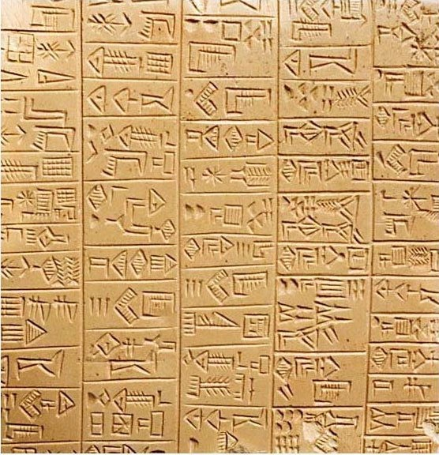
Choose one answer.
| A. Cuneiform | ||
| B. Hieratic | ||
| C. Hieroglyphs | ||
| D. Aramaic | ||
| E. Phoenician |
Question 97
This royal portrait head possibly
depicts what Ancient Near Eastern
ruler?
Choose one answer.
| A. Sargon | ||
| B. Hammurabi | ||
| C. Naram-Sin | ||
| D. Ashurnasirpal II | ||
| E. Ur-Nammu |
Question 98
Silver or gold objects such as this
one were popular drinking vessels
during which period?
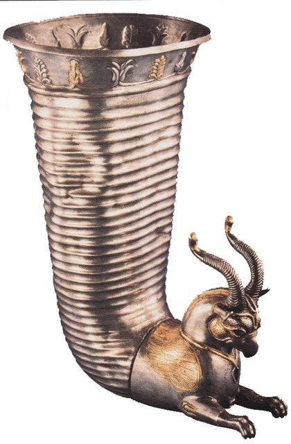
Choose one answer.
| A. Achaemenid Period | ||
| B. Akkadian Period | ||
| C. Neo-Assyrian Period | ||
| D. Early Dynastic Period | ||
| E. Neo-Sumerian Period |
Question 99
What Neo-Assyrian ruler named the
palace he built in his new capital
city, "The Palace Without Rival"?
Choose one answer.
| A. Sennacherib | ||
| B. Ashurnasirpal II | ||
| C. Sargon II | ||
| D. Tiglath Pileser III | ||
| E. Shalmeneser III |
Question 100
What Neo-Babylonian ruler built the
Ishtar Gate?
Choose one answer.
| A. Nebuchadnezzar II | ||
| B. Hammurabi | ||
| C. Nabopolassar | ||
| D. Amel-Marduk | ||
| E. Neriglissar |